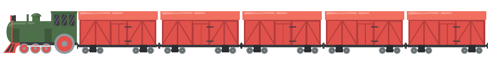
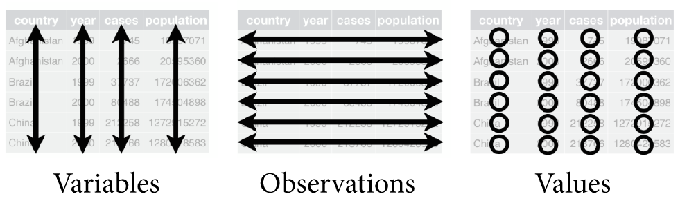
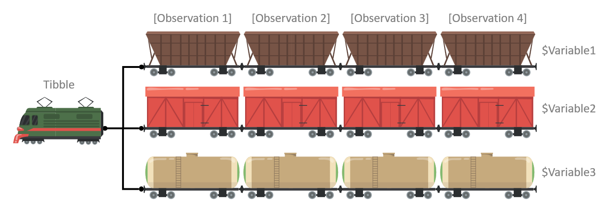

# LESSON: We can combine multiple elements into a vector
# TEMPLATE: vector_name <- c(element1, element2, element3)
x <- 4 9 16 25 # error
x <- c(4, 9, 16, 25)
x
y <- c(2, 3)
y
# ==============================================================================
# LESSON: We can also combine multiple vectors and elements
c(x, y)
c(x, y, 20)
# ==============================================================================
# USECASE: Math operators will transform each element individually
x + 1
x * 3
x # but again, this won't be saved unless you use assignment
# ==============================================================================
# USECASE: Some functions will also transform each element individually
sqrt(x)
log(x)
# ==============================================================================
# USECASE: Other functions will summarize the vector with a single number
length(x)
sum(x)
mean(x)
average(x) # errorIntroduction to R
for Social Scientists
Workshop Day 1B | 2023-06-01
Jeffrey M. Girard | Pitt Methods
Vectors
- Vectors combine similar objects into a collection
- I like to imagine a train pulling multiple cars
 - A vector is one object with many sub-objects
- We refer to each sub-object as an element
- I like to imagine a train pulling multiple cars
- Some functions transform each element in turn
- Double the amount of cargo in every train car
- Some functions summarize across elements
- Calculate the total cargo across all train cars
v <- c(1, 2, 3)
Vectors Live Coding
Strings
- When talking to R, we need a way to distinguish
- Object/function names (e.g., the mean function)
- Text/character data (e.g., the word mean)
- Strings are R’s way of storing text data
- Strings can store any characters (no rules!)
- Strings are created and displayed with quotes
- R has great tools for working with strings
- Strings can be collected into vectors
- Special functions can transform strings
name <- "John Doe"
Strings Live Coding
# USECASE: Strings are the main way to store character data in R
my_color <- red # error
my_color <- "red" # correct
# ==============================================================================
# USECASE: Strings can also store symbols not allowed in object names
dye <- "red#40"
dye
dyes <- c("red#40", "blue#02")
dyes
# ==============================================================================
# PITFALL: Many operations you can do to numbers won't work for strings
dyes + 1 # error
mean(dyes) # error
# ==============================================================================
# USECASE: But other operations work for both or even just for strings
length(dyes)
nchar(dyes)
dyes2 <- toupper(dyes)
dyes2Packages
- Cookbooks are a great way to learn to cook
- They contain lots of recipes and instructions
- Browse an online bookstore for a cookbook
- Order it to add it to your personal bookshelf
- To use, pull the cookbook off the shelf
- Packages are like cookbooks for R
- They contain helpful functions and datasets
- Browse an online repository for a package
- Install it to add it to your personal library
- To use, load the package from the library
library("pkg_name")
Packages Live Coding
# USECASE: The tidyverse package adds a function to fix capitalization
students <- c("mary anne", "BENjamin", "Lee")
# ==============================================================================
# PITFALL: But we can't use that function without installing the package
str_to_title(students) # error
# ==============================================================================
# LESSON: Installing a package using RStudio
# - RStudio > Extras pane > Packages tab > Install button
install.packages("tidyverse")
# ==============================================================================
# PITFALL: We also need to load the package before we can use it
str_to_title(students) # error
# ==============================================================================
# LESSON: We load the package using library()
library("tidyverse")
str_to_title(students) # finally works!
# ==============================================================================
# LESSON: We can also keep our packages updated using RStudio
# RStudio > Extras pane > Packages tab > Update button
# ==============================================================================
# USECASE: We can see if a package contains any vignettes (articles)
browseVignettes("tidyverse")
# ==============================================================================
# USECASE: We will use the easystats package tomorrow, so let's install it now
install.packages("easystats")Tidy Data Principles
- There are many ways to store data
- We will be learning the tidy data format
- Data should be rectangular
- Each variable has its own column
- Each observation has its own row
- Each value has its own cell

Other Data Advice
- Name all variables in the first row
- This is called a header row
- Avoid merged cells for data storage
- These are okay for communication
- Avoid empty cells whenever possible
- Mark missing data as
NA
- Mark missing data as
- Avoid formatting-as-data for storage
- e.g., non-redundant color-coding
Tidying Example 1
Not Tidy
| Name | Ann | Bob | Cat | Dom |
| Age | 13 | 10 | 11 | 11 |
| Weight | 56.4 | 46.8 | 41.3 | 43.3 |
❌ Here, each row is a variable and each column is an observation.
Tidy
| Name | Age | Weight |
| Ann | 13 | 56.4 |
| Bob | 10 | 46.8 |
| Cat | 11 | 41.3 |
| Dom | 11 | 43.3 |
✔️ Here, each column is a variable and each row is an observation.
Tidying Example 2
Not Tidy
| Names: | Ann | Bob | Cat | Dom |
| Age | Weight | |||
| 13 | 56.4 | |||
| 10 | 46.8 | |||
| 11 | 41.3 | |||
| 11 | 43.3 |
❌ Here, we have data that is not rectangular because the Names variable has its own row.
Tidy
| Name | Age | Weight |
| Ann | 13 | 56.4 |
| Bob | 10 | 46.8 |
| Cat | 11 | 41.3 |
| Dom | 11 | 43.3 |
✔️ Here, we have made the data rectangular by moving the Names variable to its own column.
Tidying Example 3
Not Tidy
| country | year | cases / population |
| Afghanistan | 1999 | NA / 19987071 |
| 2000 | 2666 / 20595360 | |
| Brazil | 1999 | 37737 / 172006362 |
| 2000 | 80488 / 174504898 | |
| China | 1999 | 212258 / 1272915272 |
| 2000 | 213766 / 1280428583 |
❌ Here, we have merged cells and two values stored in a single cell.
Tidy
| country | year | cases | population |
| Afghanistan | 1999 | NA | 19987071 |
| Afghanistan | 2000 | 2666 | 20595360 |
| Brazil | 1999 | 37737 | 172006362 |
| Brazil | 2000 | 80488 | 174504898 |
| China | 1999 | 212258 | 1272915272 |
| China | 2000 | 213766 | 1280428583 |
✔️ Here, we have un-merged the countries and separated the cases and populations variables into columns.
Tidying Example 4
Not Tidy
| student | grade | |
| Amber | 91.5 | A- |
| Bristol | 86.2 | B |
| Charlene | 94.0 | A |
| Diego | 89.3 | B+ |
| Legend: Psych. Major, Psych. Minor | ||
❌ Here, we have a missing variable name and formatting-as-data.
Tidy
| student | psych | grade | letter |
| Amber | major | 91.5 | A- |
| Bristol | minor | 86.2 | B |
| Charlene | major | 94.0 | A |
| Diego | NA | 89.3 | B+ |
✔️ Here, we have added a column for the psych variable, removed the legend, and named the letter variable.
Tidying Example 5
Not Tidy
| student | grade | letter |
| Amber | 91.5 | A- |
| Bristol* | 94.2 | A |
| Class Summary | ||
| As | 2 | Yay! |
| Bs | 0 | |
| *Grade was revised. | ||
❌ Here, we have two types of data in one file and a footnote as data.
Tidy
| student | grade | letter | revised |
| Amber | 91.5 | A- | FALSE |
| Bristol | 94.2 | A | TRUE |
| letter | count | notes |
| A | 2 | Yay! |
| B | 0 |
✔️ Here, we have split the data into two separate tables and added the revised and notes variables.
Long vs. Wide Format
Wide Format
| date | Boeing | Amazon | |
| 2009-01-01 | $173.55 | $174.90 | $174.34 |
| 2009-01-02 | $172.61 | $171.42 | $170.04 |
✔️ Here, we have a wide format where each observation is a date.
Long Format
| date | stock | price |
| 2009-01-01 | Boeing | $173.55 |
| 2009-01-01 | Amazon | $174.90 |
| 2009-01-01 | $174.34 | |
| 2009-01-02 | Boeing | $172.61 |
| 2009-01-02 | Amazon | $171.42 |
| 2009-01-02 | $170.04 |
✔️ Here, we have a long format where each observation is the combination of a date and a stock.
Tibbles
- R works particularly well with tidy data
- We store tidy data in data frames or tibbles
- Tibbles are just fancier data frames
(i.e., they have a few extra features)
- Tibbles are just fancier data frames
- To use tibbles, we need the tidyverse package
- Tibbles are constructed from one or more vectors
- The vectors must have the same length
- They can contain different types of data
Vectors

We start with three separate vector objects that all have the same length.
We set it up so that the \(n\)-th car in each train corresponds to the same observation.
Tibble
Then we combine the vectors into a single tibble (or data frame) object.
Now, as the tibble moves around, the variables always stay together.
Tibbles Live Coding
# SETUP: Install and load the tidyverse package
# Extras pane > Packages tab > Install
library(tidyverse)
# ==============================================================================
# LESSON: Create a tibble from vectors
x <- c(10, 20, 30, 40)
x
y <- x * 2 - 4
y
my_tibble <- tibble(x, y)
my_tibble
# ==============================================================================
# USECASE: You can mix different types of vectors in a single tibble
first_names <- c("Adam", "Billy", "Caitlyn", "Debra")
age_years <- c(12, 13, 10, NA)
guests <- tibble(first_names, age_years)
guests
# ==============================================================================
# TIP: To save time, you can also create the vectors in the tibble call
gradebook <- tibble(
grade = c(95, 83, 90, 76),
letter = c("a", "b", "a-", "c")
)
gradebook
# ==============================================================================
# PITFALL: Don't try to combine tibbles with different lengths
y <- c(1, 2, 3)
x <- c("a", "b")
tibble(y, x) #error
# ==============================================================================
# LESSON: However, the exception is R will "recycle" a single value
tibble(y, x = "a")
# ==============================================================================
# LESSON: You can "extract" a vector from a tibble using $
mytibble <- tibble(x = c(1, 2, 3, 4, 5), y = "test")
mytibble$x
mytibble$y
# ==============================================================================
# PITFALL: Don't try to extract a vector that doesn't exist
mytibble$z #error
# ==============================================================================
# USECASE: Get information about a tibble
dim(gradebook)
colnames(gradebook)Data Files
- Data is usually stored in data files
- Importing files into R is called reading
- Exporting files from R is called writing
- A convenient data file type is a CSV
- This stands for comma-separated values
- A CSV file is easy to share with other people
- The tidyverse package can read/write CSVs
- Other packages can read/write other types (e.g., readxl, haven, rio, googlesheets4)
Data Files Live Coding
# SETUP: Load the tidyverse package (if you haven't yet)
library(tidyverse)
# ==============================================================================
# USECASE: Create a tibble and write it to a file in your project folder
gradebook <- tibble(
id = c(123, 456, 789),
grade = c("A", "B", "?")
)
gradebook
write_csv(gradebook, file = "gradebook.csv")
# NOTE: You can see the new file in Extras pane > Files tab.
# You can open the file in another program (e.g., Microsoft Excel).
# You can also email this file to someone else to share it.
# ==============================================================================
# PITFALL: Don't swap the order of the tibble and the file
write_csv("gradebook.csv", gradebook) # error
# ==============================================================================
# USECASE: Read in a file containing data
old_gradebook <- read_csv("gradebook.csv")
old_gradebook
# NOTE: read_csv() will examine and guess the data type of each variable.
# You can tell it the data type of each variable, but that is more advanced.
# ==============================================================================
# USE CASE: Reading in other types of data
# The readxl and googlesheets4 packages work with spreadsheets
# The haven package works with files from SPSS, SAS, and STATA
# The rio package tries to detect the type and read in anything